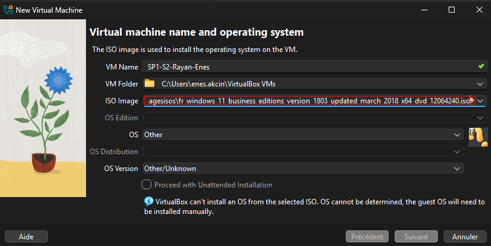
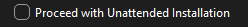
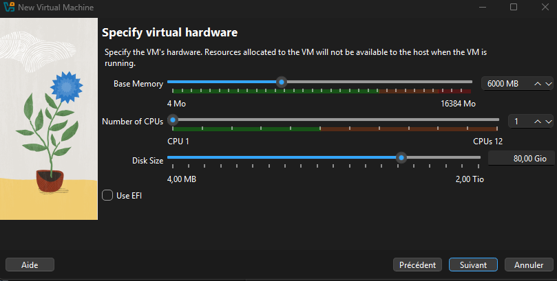
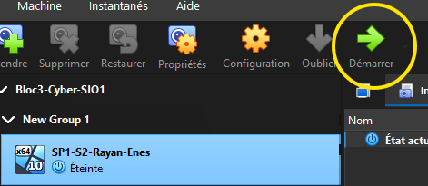

Installation Poste client

Création du poste maître
Installation de windows 11
Premièrement, créer la machine virtuelle sur Oracle VirtualBox.
-
Paramétrage :
-
Iso w11

ne pas cocher :

- 80go stockage
- ram 6

- Lancement de la machine :

- Installation :
Suivre les instructions pour formater le disque et installer windows 11.
Installation des logiciels standards de l'entreprise
Liens :
Changer le mot de passe du l'utilisateur Administrateur local
mot de passe : Mille_2026
- Aller dans paramètres
- Cliquer sur Comptes
- Options de connexion
- Mot de passe
- Modifier le mot de passe ou le créer